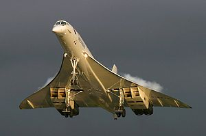

2000
2000 Motto: "Kosmisk expansion av Sann Kärlek är Fullbordandet av det Nya milleniets himmelrike."
I maj 2000 finansierade rörelsen en resa till Korea för 120 pastorer från 17 samfund. Detta ledde till skapandet
av American Clergy Leadership Conference (ACLC). ACLC-ministrar sponsrade därefter en landsomfattande
väckelse-turné "Vi kommer att stå samman i enhiget".
Den hade pastor Moon som huvud-talare och täckte 52 amerikanska städer (i alla 50 stater) under 52 dagar mellan 25
februari och 17 april 2001.
Turnén ledde i sin tur till en "Interfaith Marriage Blessing" av 60 präst-par presiderade över av pastor
Moon i Cotillion Room på Hilton Hotel i New York den 27 maj 2001.
29 juni 2000, the Declaration of the Return of the Cosmos to God. - Deklaration om kosmos (fysiska & andliga världens) återvändande till Gud.
Världen:
Concorde flygkrasch

Den 25 juli 2000 kraschade planet Concorde; Air France Flight 4590, i Gonesse, Frankrike, dödade alla
100 passagerare och nio besättningsmedlemmar ombord, samt fyra människor på marken. Det var den enda dödliga
händelsen med Concorde.
aug Vår käre broder Georg har som andra svenska välsignade medlem, gått vidare till andliga världen!
24 sep Överföring till sönerna Heung Jin Nim - andliga världen resp. Hyun Jin Nim på jorden, av rätten att ge Välsignelsen som representanter för barnen i Sanna familjen.
Världen:
Den 12 augusti 2000 sjönk den ryska ubåten Kursk i Barentshavet efter en explosion ombord.
Undersökningen visade att en läckage av våteperoxid i en torped ledde till explosion av dess bränsle
vilket ledde till att ubåten slog i botten vilket i sin tur utlöste detonationen av ytterligare torpeder.
118 dog.
I räddningen samarbetade norska bärgningsfartyg.
3 dec Kungörelse om avskaffandet av paradiset och helvetet så att alla kan registreras i himmelriket, /Punta del Este, Uruguay [CBG 1305-1331] [CBG 1440-1411]
6 historiska tal år 1999-2000:
- Chunjoo-nun Na-eui Kohyang kwa Joguk - The Cosmos is my Home Town and Fatherland, by Rev. Sun Myung Moon, December 19, 1999, Belvedere.
- World Unification and North-South Unification Will Be Accomplished by True Love, Rev. Sun Myung Moon, Seoul, Korea, February 10, 2000.
- Everyday Workshop, South American tour, December 6, 2000
- Speech upon arrival at East Garden , East Garden, December 7, 2000
- Sunday Morning Sermon, East Garden, December 10, 2000
- Sunday Morning Sermon, East Garden, December 22, 2000
Perioden fram till 31 december 2000 var en tid av att vandra en världs-omspännande gottgörelseperiod baserat på sfären av det andra Israel. Nu har den tidsåldern passerat, och gryningen för det nya Fullbordade Testamentets tidsålder har anlänt, den tid då Välsignelsens ideal kan expanderas till kosmos.
Kristus-breven 1-9 (andlig kommunikation med Jesus).
Åren 2000/2001 gav Jesus dessa meddelanden via anonymt medium.
Link - English